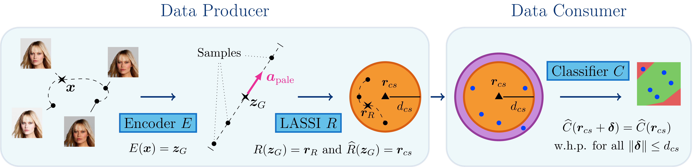

Fairness in AI
Deep learning models are increasingly being used to make decisions in critical domains such as loan applications, crime risk-assessments and human resources. The decisions made by these data‐driven models can have wide‐ranging impacts and consequences on individuals and society as a whole. Recent studies, however, found that these models and datasets can be biased, resulting in discrimination based on factors such as race or gender.
In order to ensure that similar individuals are treated similarly in their paper Latent Space Smoothing for Individually Fair Representations, Peychev et al. introduce a novel representation learning method called LASSI, that is able to certify individual fairness on high-dimensional data. This is done by using recent advances in generative modelling and the scalable certification of deep models.
In this work, we aim to study the reproducibility of the work executed by the Peychev et al., and we attempt to verify the three main claims in their paper: (1) LASSI increases certified individual fairness, while keeping prediction accuracies high, (2) LASSI can handle various sensitive attributes and attribute vectors and (3) LASSI representations can achieve high certified individual fairness even when downstream tasks are not known. In addition, we aim to extend their research by performing additional experiments to validate the robustness of their claims and investigate the encountered outliers.
On this project page we present a brief summary of the project, including a short theoretical background, the results and the discussion. In the GitHub repository the code can be found, alongside a detailed description on how to reproduce the original and additional experiments.
LASSI: Certified Individual Fairness
Generative modelling (GLOW) - In order to ensure fairness, similar individuals that only differ in one or more sensitive attributes such as race or age, need to be treated similar by the LASSI model. To do this, we want to ignore these sensitive attributes in the classification process. This is achieved by using the generative model GLOW, which allows us to alter the input data in the latent space along a specific attribute vector, as shown in the figures above. When the different variations of these faces are treated similarly in the classification process, we can state that we have achieved certified individual fairness.
LASSI - By treating all the variations of an image generated by the GLOW model in the same manner, the LASSI model learns a fair representation of a specific task. It is ensured that the model learns to discriminate only based on features other than the sensitive attribute, which the GLOW model attempts to alter as little as possible. This adversarial training is performed by uniformly selecting points on the sensitive attribute vector with a maximum perturbation level, and train the model based on these images, to ensure fair treatment.
The training process involves balancing fairness, accuracy, and transferability to unknown tasks by finding the optimal value of different loss functions. Once the fair representation of the data is learned, it can be used to train a classifier for any downstream task. The method is compared to a fairness‐unaware (naive) baseline model for evaluation. For a more detailed explanation description, we would like to redirect you to our paper.
Results - Reproduced experiments
In the following sections we summarize the main results of the reproducibility studies. In our dedicated GitHub repository a detailed description is given of how the original experiments are reproduced and how our own additional experiments can be executed.
Below we demonstrate the results of three sensitive attributes on two tasks: smiling and wearing earings. In blue the accuracy and the fairness of the naive model is displayed, and in red those of the proposed LASSI model. Our results indicate that LASSI indeed increases certified individual fairness, while keeping prediction accuracies high.
The gifs are constructed by us and are examples of output generated by the GLOW model on a specific sensitive attribute. Keep in mind that the CelebA dataset consists of images of 64x64 pixels and the quality is therefore not very high.
Results - Additional experiments
In this section we present the results of the additional experiments executed to test the robustness of the claims made by the original authors. LASSI was tested on four additional sensitive attributes and tasks. The performance of LASSI shows that the model increases fairness for all attributes and tasks significantly, while keeping the prediction accuracy comparable to that of the baseline naive model.
When LASSI is trained on the 'attractive' task, using 'bald' or 'chubby' as sensitive attribute the model does not achieve a high fairness. We study these two outliers and find two possible explanations: (1) a high bias between certain tasks and sensitive attributes and (2) the possibly corrupted inputdata generated by the GLOW model for certain attributes. A detailed study into these outliers is reported in Appendix Section C.
Conclusion
Despite compromises made due to resource limitations, we find very similar results in all reproduced and additional experiments conducted. We find that: (1) LASSI increases certified fairness on (2) various sensitive attributes and attribute vectors, while keeping prediction accuracies high. The results also indicate that (3) LASSI achieves high certified individual fairness even when the downstream tasks are not known. In addition, the additional experiments conducted demonstrate that the claims are robust.
Paper

References and Useful Resources
- GLOW model | Examples used of Prafulla Dhariwal and Durk Kingma
- Reproducibility Paper | Code
- Original Paper | Code | LASSI model overview downloaded from here
- CelebA Dataset | used to generate GLOW output examples
- FairFace Dataset